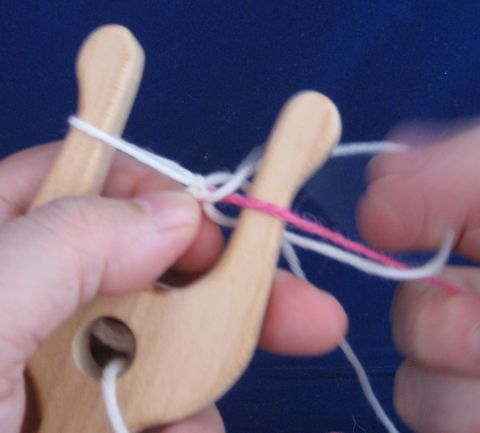
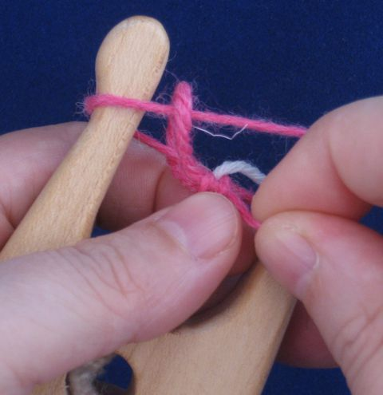

It is best to make sure you have enough yarn for the entire cord. The takeup is about 10:1, i.e. ten meters of yarn becomes one meter of cord. But sometimes you for example have a knot in the yarn and you can't really lucet that, you have to cut away the knot and somehow continue after that with the new yarn.
If your yarn is wool and felts, spit splicing works wonders. Note that it won't work with superwash wool as that doesn't felt.
If your yarn doesn't felt, but is fairly thick and twisted, Russian join should work.
Switching yarn in the middle of the cord
A basic square lucet cord is actually hollow.

Because the cord is hollow, it is possible to hide a new yarn inside the cord for some rounds and then switch, after which the old yarn is kept inside the cord for a bit and then cut. This way you can also create color blocks in your cord, the yarn that isn't being used travels inside the cord.
 |
Lay the new yarn on top of the cord between the cord and the yarn from the ball. Flip the lucet normally and flip the new yarn to the back of the lucet. |
 |
Continue this way for a few centimeters, make sure that the new yarn stays inside the cord. |
|  | Switch to the new yarn. The old yarn goes inside the cord. |
|  | Continue for a few centimeters while the old yarn travels inside the cord. Then cut the old yarn and continue the cord normally with the new yarn. |
I've made a little video on working with two yarns.
If you need a join that can take a lot of pulling, you can always put the yarns on top of each other and work the cord with two yarns for a bit. However, this way the join is quite a bit thicker than the rest of the cord.